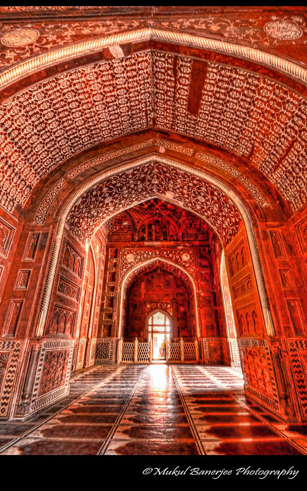

Un sanctuère religieux.
Le Taj Mahal représente aussi un lieu repère de spiritualité pour les musulmans.
En effet, la mosquée qui y a été construite afin de sanctifier l'endroit, fournit un lieu de culte aux pèlerins.
Celle-ci possède à droite du mausolée une réplique symétrique exacte connue sous le nom de jawab (« réponse »),
destinée à maintenir la symétrie architecturale, cependant, n'étant pas orientée vers La Mecque, elle n'est pas employée
comme mosquée.
Par ailleurs, le dôme central du tombeau repose sur un tambour et est surmontée d'un pinacle en bronze décoré d'un kalash,
symbole hindouiste, et d'un croissant de lune, symbole islamique, lui-même surmonté d'une plaque estampée du nom d'Allah.